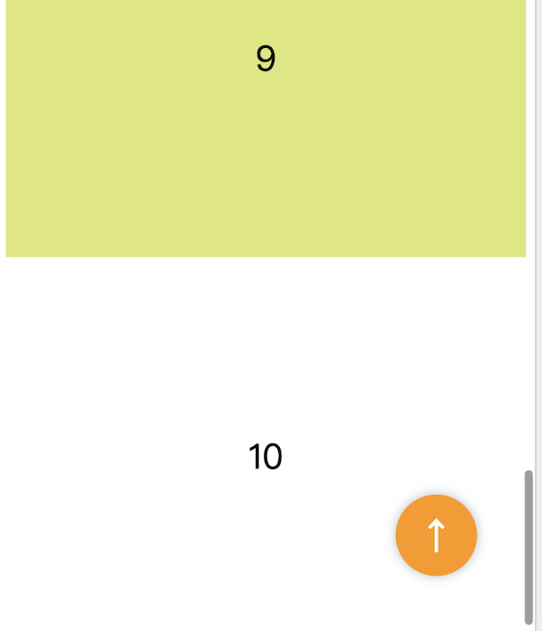
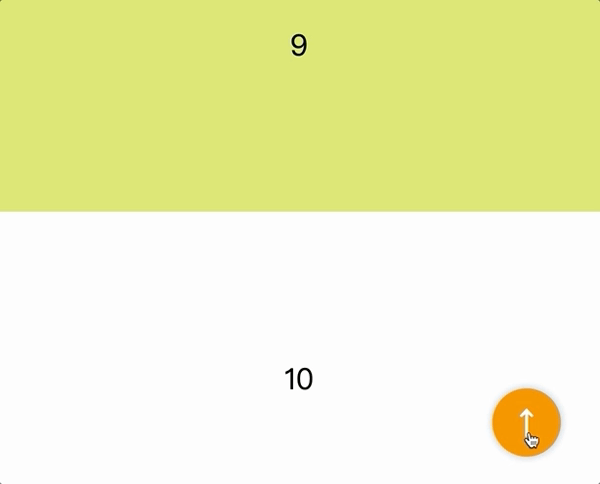
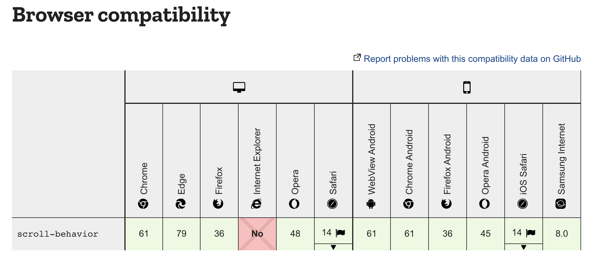

在網頁開發中，錨點算是個常見的需求，例如：在點擊按鈕後，畫面想要蝦趴的「滑」到頂部。
這種平滑的滾動效果，其實只要加一行 CSS 就可以辦得到，無需勞動到 JS，也就是今天要介紹的 scroll-behavior 屬性，直接進入實作吧!
實作範例
情境：
現在頁面上有很多區塊(達到可滾動的狀態)，而不管畫面在哪，只要點擊右下角橘色按鈕，就要滑動到最上方。
codepen 原始碼範例

HTML 如下:
1 | <a id="top"></a> |
CSS 的部分，在 html 加上 scroll-behavior: smooth 即可。
1 | html { |
實際效果如下：

最後，順帶看一下瀏覽器兼容性:

圖片來源: MDN
結束XD
參考資源
MDN-scroll-behavior